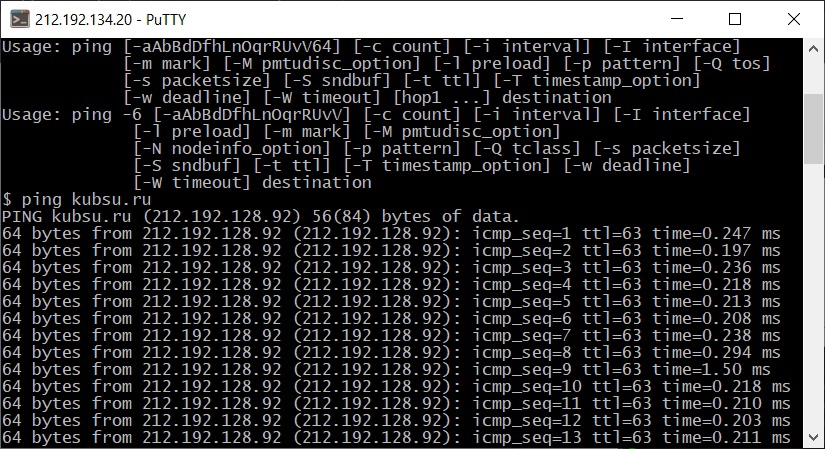
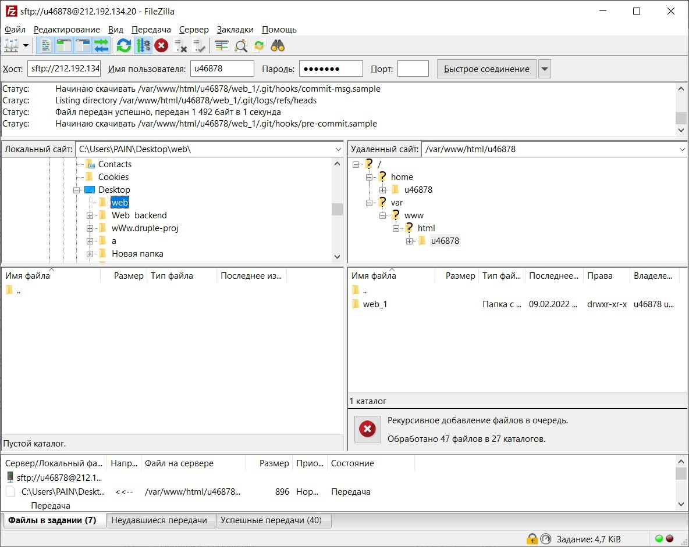
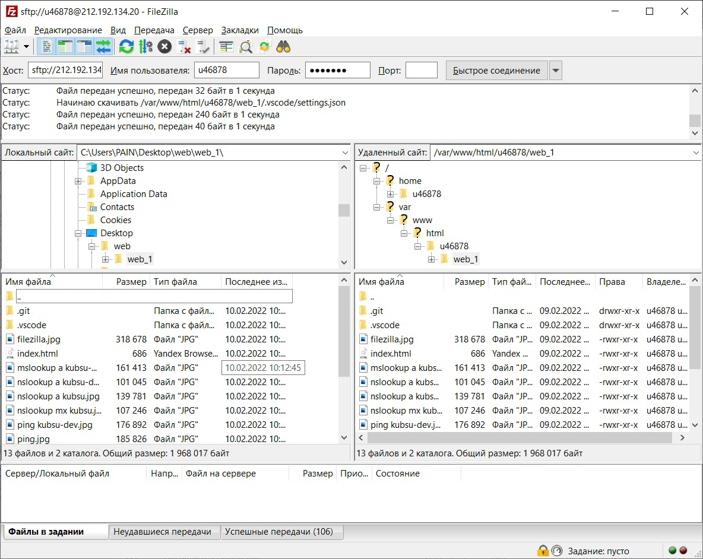

Вход в putty (устанавливает ssh соединение с удаленным сервером, с последующим запросом логина и пароля)


Ping kubsu.ru и kubsu-dev.ru(показывает может ли удаленный компьютер подключиться к серверу и задержку подключения)


Команда nslookup для A-записей и mx-записей kubsu.ru и kubsu-dev.ru(запросов в доменной системе имен (DNS) с целью получения доменного имени, IP-адреса или другой информации из записей DNS.)
Запись MX (Mail eXchange) хранит соответствие доменного имени почтовому серверу этого домена.
Запись A (ANY) возвращает все возможные записи для указанного хоста


whois команда для проверки даты регистрации домена kubsu.ru и kubsu-dev.ru(команда показывает не только дату регистрации домена, а также информацию о том кому принадлежит домен его расположение и дату истечения срока домена)


Использовани команды git clone для добавления файлов из репозитория github на удаленный сервер

Скачивание файлов на локальный компьютер с помощью программы FileZilla(ftp) клиента


Для повторной загрузки файлов из репозитория github были использованы команды git stash (создает временное хранилище куда отправляются сделанные изменения) и git pull (извлекает содержимое из удаленного репозитория и синхронизирует из с локальными данными, в данном случае синхронизует удаленный сервер с данными хранящимися в stash)